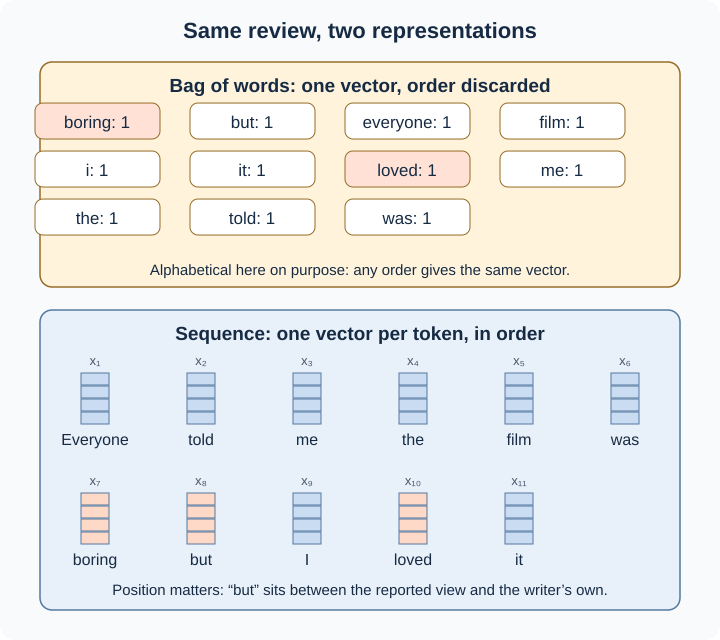
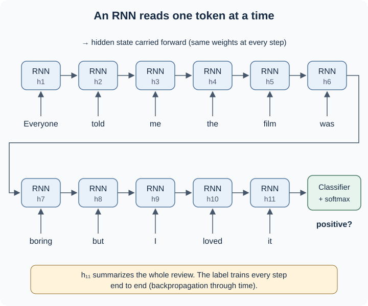
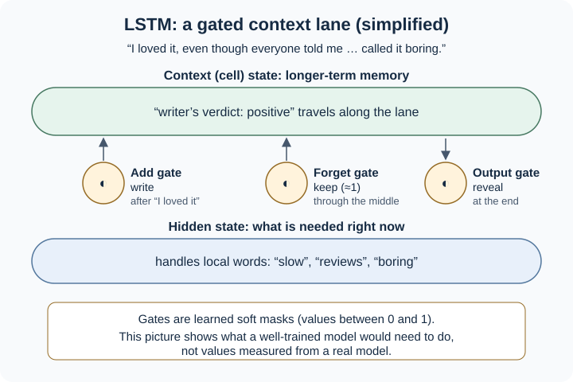
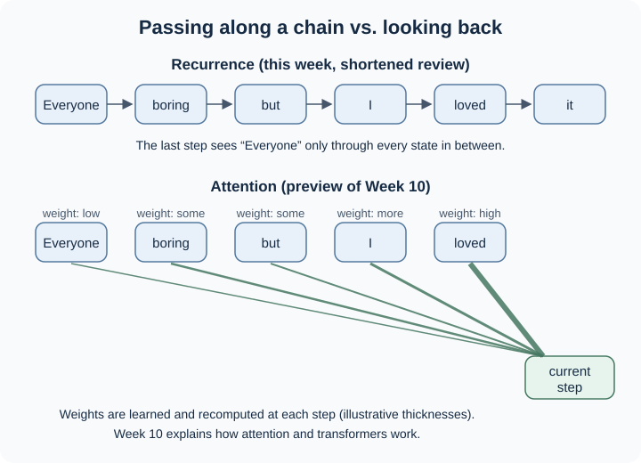

9.1 From RNNs and LSTMs to Language Models#
In Week 07 you saw that sentiment words cannot simply be added up: negation, intensity, and contrast change what each word contributes. This week asks how a model can take that into account:
How can an NLP model use word order and remember context, and why did this lead from recurrent models to modern language models?
We will follow one short movie review throughout the chapter:
“Everyone told me the film was boring, but I loved it.”
The review contains a negative word (boring) and a positive word (loved). Which one expresses the writer’s own view depends on the order of the words and on the word but. All model outputs, probabilities, and “memory” descriptions below are illustrative teaching examples. They show what information a model would need, not what any particular trained model actually predicts.
By the end, you should be able to:
explain what earlier text representations capture or omit about order
trace how a recurrent neural network (RNN) reads a sentence
explain why LSTMs were introduced and what their gates do
distinguish three sequence task shapes
explain language modeling without confusing recurrent models with today’s transformer-based LLMs
name the limits of recurrence that motivate Week 10
1. Connecting the Dots: When Word Order Changes Meaning#
Note
Connecting the dots. You know: vectors, classifiers, and why negation breaks lexicon scoring. New problem: keeping track of order and context across a whole text. Next: representing a text as a sequence rather than a single vector.
Several earlier tools captured useful information about text, but each handled order differently:
Representation (week) |
What it captures |
What it loses or limits |
|---|---|---|
Bag-of-words, TF-IDF (Week 03) |
Which words occur and how much they matter |
Word order across the text |
n-grams |
Short local sequences, such as not bad |
Anything outside the n-word window |
Word embeddings |
Meaning similarity between individual words |
Order, if word vectors are simply averaged into one document vector |
Logistic regression (Week 05) |
A weighted decision over whatever features you give it |
Only as order-aware as its features |
Consider a minimal pair:
The acting was good, not bad.
The acting was bad, not good.
Both sentences contain exactly the same words, so their bag-of-words vectors are identical. Bigrams can tell them apart, because not bad and not good are different features. Local order is enough here.
Now reorder our running review using the same words:
Everyone told me the film was boring, but I loved it.
I loved it, but everyone told me the film was boring.
The bags of words are again identical. Many readers would hear the first as a positive review and the second as more hesitant, because what comes after but tends to carry the writer’s emphasis. Few bigrams differ between these two versions. What changes is the overall structure: who said boring, and which clause comes last. To capture that, a model needs to read the text in order and carry information forward from earlier words.
2. From Text Vectors to Sequences#
Note
Connecting the dots. You know: one vector per document. New problem: keeping one vector per token, in order. Next: a network that reads those vectors one at a time.
Earlier weeks usually turned a whole document into one vector and then classified or compared that vector. A sequence model instead keeps one vector per token, in order. Each token can be represented by an embedding, and the text becomes an ordered list \(x_1, x_2, \ldots, x_n\). Here, \(x_1\) is the vector for Everyone, \(x_2\) is the vector for told, and so on. The position in the list is called a time step, even for written text, because the model processes the tokens one after another.

Fig. 17 One document vector versus an ordered sequence of token vectors#
A neural layer in one paragraph#
Recurrent networks are neural networks, so we need one idea that earlier chapters did not cover. In Week 05, logistic regression computed a weighted sum of features and passed it through a function that turned the score into a probability. A neural layer does many such weighted sums at once, each with its own weights, and passes every result through a nonlinear function. The output is a new vector of learned features rather than a single score. Layers can be stacked, and the final layer can use a softmax, the same bridge idea from Week 05, to choose among classes or words. All the weights are learned from examples: training repeatedly adjusts them in the direction that reduces the loss (the prediction error) [JM26b].
That is all the neural-network background this chapter requires.
3. How Recurrent Neural Networks Work#
Note
Connecting the dots. You know: a neural layer turns an input vector into a new vector. New problem: letting that layer remember what came before. Next: why that memory fades over long distances.
A recurrent neural network (RNN) reads a sequence one token at a time. At each step it combines two things:
the vector for the current token, and
its own hidden state from the previous step: a vector that summarizes what it has read so far.
The result is a new hidden state, which is passed to the next step. Jurafsky and Martin describe the previous hidden layer as providing “a form of memory, or context” [JM26b] (§14.1). The simple RNN architecture discussed in that chapter is often called an Elman network, after Elman (1990).
Optional: the recurrence in one line
For readers who like notation, a simple RNN computes each hidden state as
where \(x_t\) is the current token vector, \(h_{t-1}\) is the previous hidden state, \(W\) and \(U\) are weight matrices, and \(g\) is a nonlinear function. The same \(W\) and \(U\) are used at every step [JM26b] (§14.1.1). You will not need to calculate with this equation.
Two properties matter for applied work:
Shared weights. The same weights are reused at every time step. The model therefore has the same number of parameters for a 5-word review and a 500-word review.
No fixed window. Unlike an n-gram, the hidden state can, in principle, carry information from the very beginning of the sequence [JM26b] (§14.1, §14.2).
Drawing the network once per time step, called unrolling, makes this visible:

Fig. 18 An unrolled RNN reading the running review, with a classifier at the end#
Training: backpropagation through time#
How are the shared weights learned? The model reads the sequence forward and computes a loss. The error signal is then sent backward through every time step, because each hidden state influenced all the steps after it. Since every step uses the same weights, their adjustments are combined. This procedure is called backpropagation through time (BPTT). With modern frameworks, the unrolled network is trained like any other network [JM26b] (§14.1.2).
BPTT also reveals a weakness. To learn that boring at step 7 matters for a decision at step 11, the error signal must travel back through every step in between. The next section explains why that is hard.
4. Why LSTMs Were Developed#
Note
Connecting the dots. You know: an RNN carries a running summary forward. New problem: that summary tends to forget distant words. Next: using gated memory in real NLP tasks.
In practice, simple RNNs struggle to use information far from the current position. The information in their hidden states “tends to be fairly local”, more about the last few tokens than earlier ones [JM26b] (§14.5). The chapter gives two reasons:
One vector, two jobs. The hidden state must be useful for the current step and carry forward everything needed later. Each new token rewrites it.
Vanishing gradients. During BPTT, the error signal passes through repeated multiplications at every step. It often shrinks toward zero before it reaches distant steps, so the model cannot learn long-range connections well.
To see why distance matters for sentiment, rearrange the review so that the decisive clause comes first:
I loved it, even though everyone told me the film was slow and the reviews called it boring.
When the model reaches the final word, the most recent tokens are slow and boring. The writer’s own verdict, I loved it, is more than a dozen tokens back. A simple RNN whose memory fades would be pulled toward the recent negative words.
Gated memory#
The long short-term memory (LSTM) network, introduced by Hochreiter and Schmidhuber (1997), addresses this by adding a separate context (often called the cell state) alongside the hidden state. It then controls the flow of information with three learned gates [JM26b] (§14.5):
Gate |
Plain-language job |
In our rearranged review (simplified intuition) |
|---|---|---|
Forget gate |
Erase information no longer needed |
Little reason to erase “the writer loved it” when even though signals a concession |
Add gate (input gate) |
Write useful new information into the context |
Store “writer’s verdict: positive” after I loved it. Note boring as someone else’s report |
Output gate |
Reveal the part of the context needed right now |
At the end, expose the stored verdict to the classifier |
Each gate produces values between 0 and 1 and acts like a soft mask: values near 1 let information pass, values near 0 block it. Crucially, the gates are learned from data. Nobody programs a rule such as “remember the writer’s verdict”. The right-hand column describes what a well-trained model would need to do, not a guaranteed behavior.

Fig. 19 Simplified intuition for LSTM memory control (not a picture of learned values)#
Important
LSTMs improve, but do not solve, the problem of long-range context. Gated memory makes distant information easier to keep, which is why LSTMs replaced simple RNNs as the standard recurrent unit [JM26b] (§14.5.1). But an LSTM still squeezes everything it has read into fixed-size vectors, and very distant or very detailed information can still be lost.
What is remembered?#
The table follows the original review step by step. It asks what a sentiment model would need to have kept so far. It does not describe what any particular model stores.
After reading… |
Information worth keeping |
Why |
|---|---|---|
Everyone told me |
Someone other than the writer is about to give an opinion |
Later sentiment words may not be the writer’s own |
…the film was boring |
A negative opinion, attributed to “everyone” |
Useful, but not necessarily the final verdict |
…, but |
A contrast is coming |
What follows will likely carry the writer’s emphasis |
…I loved |
The writer’s own view is positive |
This is the evidence most relevant to the label |
…it. (end) |
Overall: positive, despite reported criticism |
This summary is what the classifier reads |
Try the same exercise mentally for the rearranged review. Which row would have to survive the longest?
5. LSTMs in Applied NLP#
Note
Connecting the dots. You know: how an LSTM reads and remembers. New problem: connecting it to real tasks. Next: using the same machinery to predict text.
Sentiment as sequence classification#
Our running task, deciding whether a review is positive or negative, is sequence classification: one label for a whole text. A standard recurrent design works like this [JM26b] (§14.3.2):
Convert tokens to embeddings.
Run an RNN or LSTM over the sequence.
Take the final hidden state as a summary of the whole text, or pool all the hidden states (for example by averaging them).
Pass that summary to a small feedforward classifier with a softmax.
The loss comes only from the final label, and the error signal flows back through the classifier and every recurrent step. This is called end-to-end training. Intermediate steps do not need their own labels.
Compared with the Week 05 and Week 07 pipelines, the main change is that the representation is no longer a fixed bag of features. It is built step by step, in order. The evaluation questions from Week 05 still apply unchanged: which metric, which errors, which threshold.
Bidirectional LSTMs. A final hidden state naturally reflects more information about the end of the sentence than its beginning [JM26b] (§14.4.2). For classification, the whole text is available at once, so a common remedy is a bidirectional LSTM. One LSTM reads left to right, another reads right to left, and their final states are combined. In the rearranged review, the backward reader finishes on I loved it. You will often see bidirectional LSTMs in applied code.
Two other task shapes#
The same recurrent machinery supports different outputs [JM26b] (§14.3, §14.6):
Task shape |
Output |
Example with our review |
|---|---|---|
Sequence classification |
One label for the whole sequence |
positive |
Sequence labeling |
One label per token |
Everyone/PRON told/VERB me/PRON the/DET film/NOUN was/AUX boring/ADJ but/CCONJ I/PRON loved/VERB it/PRON |
Next-token prediction (language modeling) |
A probability distribution over the next token, at every step |
After …but I, which word comes next? |
Part-of-speech tagging is the classic labeling task: the model reads each word in context and assigns a tag at every step. The third row leads directly to language models in Section 6.
Brief application: sequential recommendation
In Week 08, content-based and collaborative recommenders compared profiles, items, and interaction patterns. None of those methods needs an LSTM. Some recommendation problems, however, depend on order: a user who just watched three thrillers in one session may want a different next item than one who watched them months apart. Treating a session’s clicks as a sequence and predicting the next item has the same shape as predicting the next word. Hidasi et al. proposed RNN-based recommendation for short sessions where long user histories are unavailable [HKBT15]. The idea is a short extension of this week, not its focus.
In this week’s coding practice, you will run a small LSTM sentiment model. Look for the steps above: an embedding layer, a recurrent layer producing hidden states, a choice between the final state and pooling, and a classifier trained on review labels.
6. From Recurrent Models to Language Modeling#
Note
Connecting the dots. You know: recurrent models can output something at every step. New problem: predicting the next word itself. Next: why the field moved beyond recurrence.
A language model assigns a probability to each possible next token given the tokens so far. It can also assign probabilities to whole sequences by multiplying these step-by-step probabilities [JM26b] (§14.2). An n-gram model looks back n−1 words. An RNN language model instead uses its hidden state as a summary of all previous words. RNN language models were proposed by Mikolov et al. (2010) [JM26b] (§14.2).
At each step, the model outputs a probability distribution over the vocabulary. For the prefix “Everyone told me the film was boring, but I…”, an illustrative distribution might look like this:
Next token |
Illustrative probability |
|---|---|
loved |
0.21 |
liked |
0.16 |
enjoyed |
0.12 |
thought |
0.07 |
disagree |
0.04 |
(all other words) |
0.40 |
These numbers are invented to show the form of the output. They are not measurements from a trained model. Notice the difference from sentiment classification: a classifier outputs one label for a whole text, while a language model outputs a distribution over thousands of possible tokens at every position.
Self-supervision. Where do the training labels come from? From the text itself. At each position, the correct answer is simply the word that actually comes next. In Jurafsky and Martin’s words, “the natural sequence of words is its own supervision” [JM26b] (§14.2.2). No human annotation is needed, so any large collection of text can serve as training data. Training compares the predicted distribution with the true next word and adjusts the weights through BPTT.
Generation. A trained language model can produce text by repeatedly sampling a next token, appending it, and predicting again. This is called autoregressive generation [JM26b] (§14.3.3).
Important
RNN/LSTM language models are not the same thing as today’s LLMs. Modern large language models are built on the transformer architecture, not on LSTMs. What they share with RNN language models is the training idea: self-supervised prediction of the next token. Jurafsky and Martin’s textbook covers transformers and pretraining in a separate chapter (Chapter 7). Additional training stages used for chat assistants appear in another chapter on post-training (Chapter 8) [JM26b]. Recurrent language models came first historically and introduced key ideas. They are not the internal engine of current LLMs.
7. Why Move Beyond Recurrence?#
Note
Connecting the dots. You know: RNNs and LSTMs read in order and carry a summary forward. New problem: the limits of that design. Next (Week 10): attention, transformers, BERT, and transfer learning.
Recurrent models were a major step, but three limitations motivated what came next:
One step at a time. Computing step t requires the hidden state from step t−1, so a recurrent model must process a sequence from start to end [JM26b] (§14.1.1). The transformer paper presents its attention-only design as dispensing with recurrence and being more parallelizable, so that it needs much less training time [VSP+17].
A fixed-size summary. Consider translation with an encoder-decoder model: one RNN encodes the source sentence, and another decodes a translation. In the basic design, the decoder sees the source only through the encoder’s final hidden state. That state acts as a bottleneck: it must represent everything about the source, and information from the beginning of long sentences may be poorly represented [JM26b] (§14.7, §14.8).
Fading distance. Even with gates, distant details compete with recent ones for space in the same vectors (Section 4).
Attention was introduced as a remedy for the bottleneck. Instead of relying only on the final summary, the decoder can look back at all the encoder’s hidden states at each step. It gives each state a weight according to how relevant it is right now [JM26b] (§14.8). Transformers went further, building models on attention without recurrence [VSP+17].

Fig. 20 Recurrence passes information along a chain; attention looks back at every earlier state with learned weights#
This chapter only previews attention. Week 10 explains how it works and how transformers, BERT, and transfer learning build on it. Transformers also have their own costs and limitations, which are part of that discussion. Attention did not make every earlier idea obsolete. Ordered input, learned representations, self-supervised next-token prediction, and careful evaluation all carry forward.
8. Key Takeaways and Knowledge Check#
Simple RNN |
LSTM |
Transformer (Week 10 preview) |
|
|---|---|---|---|
How context is kept |
One hidden state, rewritten at every step |
Hidden state plus a gated context (cell) state |
Attention over all positions |
Strength |
Reads any length with shared weights; no fixed window |
Retains longer-range information more reliably |
Direct access to distant tokens; parallelizable training |
Main limit |
Memory fades; vanishing gradients |
Still sequential; still a fixed-size summary |
Its own costs and limits (Week 10) |
Where you meet it |
Concept and history |
Applied sequence classification and labeling; this week’s coding practice |
Modern LLMs, BERT, transfer learning |
Bag-of-words and averaged embeddings lose order across a text. n-grams keep only local order.
An RNN reads token vectors in order, carrying a hidden state forward with shared weights. It is trained with backpropagation through time.
LSTMs add a gated context so the model can learn what to erase, write, and reveal. This improves long-range memory but does not solve it.
The same recurrent machinery supports sequence classification (sentiment), sequence labeling (POS tagging), and next-token prediction (language modeling).
Language models are trained by self-supervision: the next word is the label. Modern LLMs share this training idea but use transformers, not LSTMs.
Step-by-step processing and fixed-size summaries motivated attention and transformers.
Check your reasoning#
“Everyone told me the film was boring, but I loved it” and “I loved it, but everyone told me the film was boring” contain the same words. Which earlier representations treat them identically, and what does an RNN add?
In “I loved it, even though everyone told me the film was slow and the reviews called it boring”, what must a sentiment model still carry when it reaches boring? Why is that harder for a simple RNN than for an LSTM?
For each task, name the task shape and what the model outputs: deciding review polarity, tagging every word’s part of speech, suggesting the next word on a phone keyboard.
A classmate says, “Modern LLMs are just very large LSTMs.” What is right and what is wrong about that claim? Which limitation of recurrence will Week 10 address?
Suggested reasoning
Bag-of-words and TF-IDF vectors are identical, and so is an average of word embeddings. Bigrams differ only slightly. An RNN reads the words in order and updates its summary, so the position of but and of each clause can affect the final representation.
It must still carry the writer’s own verdict from the first three words: I loved it. A simple RNN’s hidden state is rewritten at every step and tends to reflect recent tokens. An LSTM’s gates can learn to keep that information in the context state, although this is not guaranteed.
Polarity: sequence classification, one label per review. POS tagging: sequence labeling, one tag per token. Keyboard suggestion: next-token prediction, a probability distribution over possible next words.
Right: LLMs are also trained to predict the next token from large amounts of text, using self-supervision. Wrong: they are built on transformers, not LSTMs. Week 10 addresses step-by-step processing and the fixed-size summary, using attention.
Next, the coding practice gives you hands-on experience with an LSTM, and the Week 10 lecture introduces attention and transformers.

References#
Main source for recurrent networks, LSTMs, task architectures, language modeling, encoder-decoder models, and attention: [JM26b] (Chapter 14, “RNNs and LSTMs”).
Transformer architecture: [VSP+17].
Sequential recommendation extension: [HKBT15].
Optional deeper reading: Jurafsky and Martin, Chapter 14, especially §14.1 (recurrent networks), §14.2 (RNN language models), §14.3.2 (sequence classification), and §14.5 (the LSTM), available at https://web.stanford.edu/~jurafsky/slp3/. The chapter uses more notation than this reading. Its equations are not required.